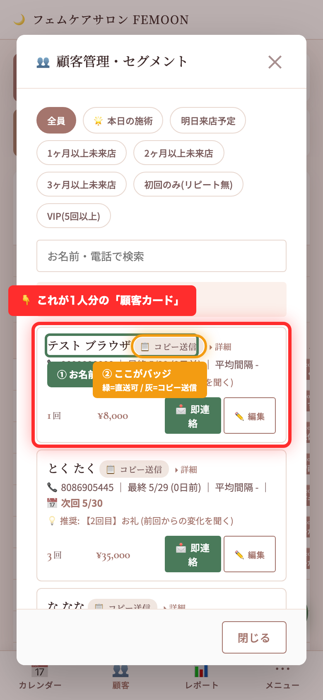

📍 顧客カードと緑バッジの場所
どこが「顧客カード」で、どこに「緑バッジ」が付くのか、実際の画面で説明します。
👇 これが実際の画面 (赤・緑・オレンジの枠を見てください)

赤い大枠 = これが 「顧客カード」 (1人分の情報を表す箱)
緑の小枠 = ① お客様のお名前 (例:「テスト ブラウザ」)
オレンジの丸枠 = ② バッジ ← お名前のすぐ右隣
🟢 バッジは2種類ある
📲 LINE直送 (緑)
→ LINEから予約してくれた人。ボタン1つで自動送信できる。
📋 コピー送信 (灰)
→ LINE経由じゃない予約者。LINE管理画面でコピペ送信が必要。
🎯 何を見てる画面？
管理画面の「👥 顧客」タブ をタップした時の画面です。
画面下のメニューから 顧客タブ → 顧客一覧 → 各カード という流れ。
🚀 緑バッジを増やすには
① お客様にフェムーン公式LINEの友だち追加してもらう
② リッチメニュー「ご予約はこちら」から予約してもらう
③ そうすると LINE userId が自動で記録される
④ 次回からそのお客様は 📲 LINE直送 バッジが付く
⑤ 「即連絡」ボタン押すだけで自動でLINEに届く 🎉
📍 管理画面に戻る